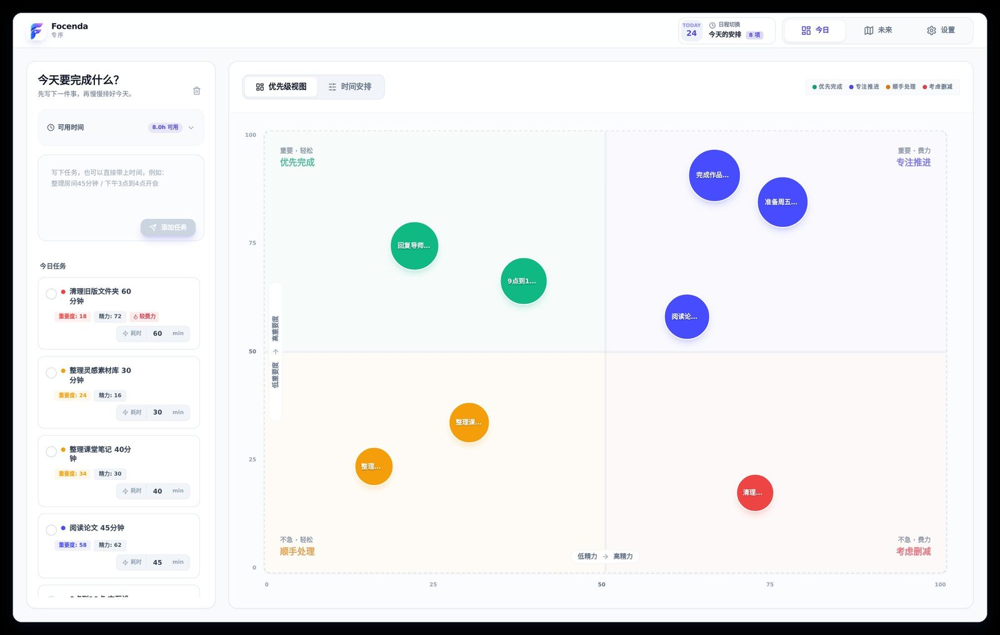
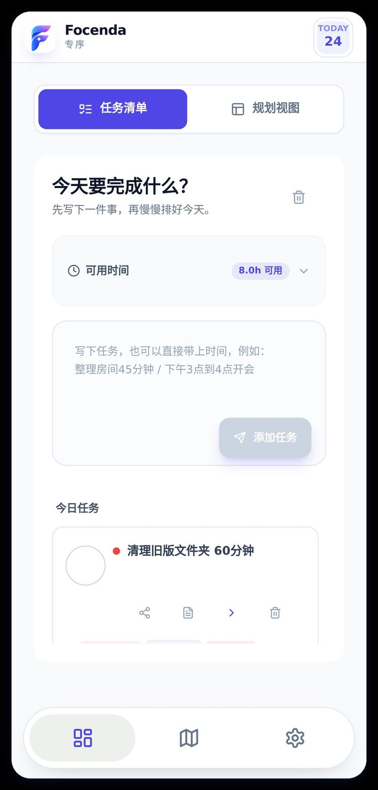
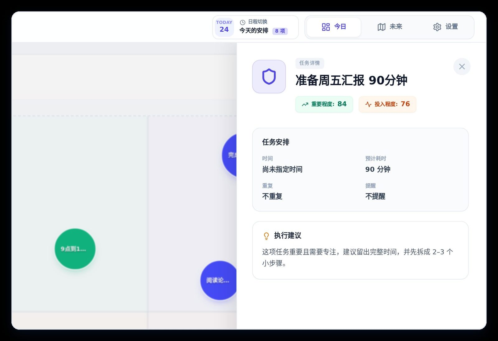
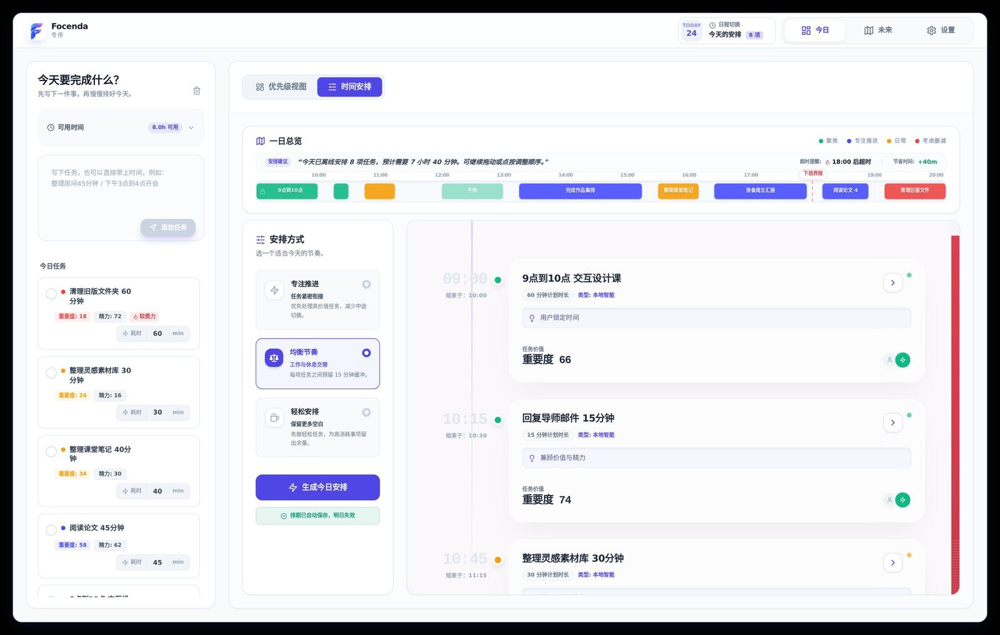
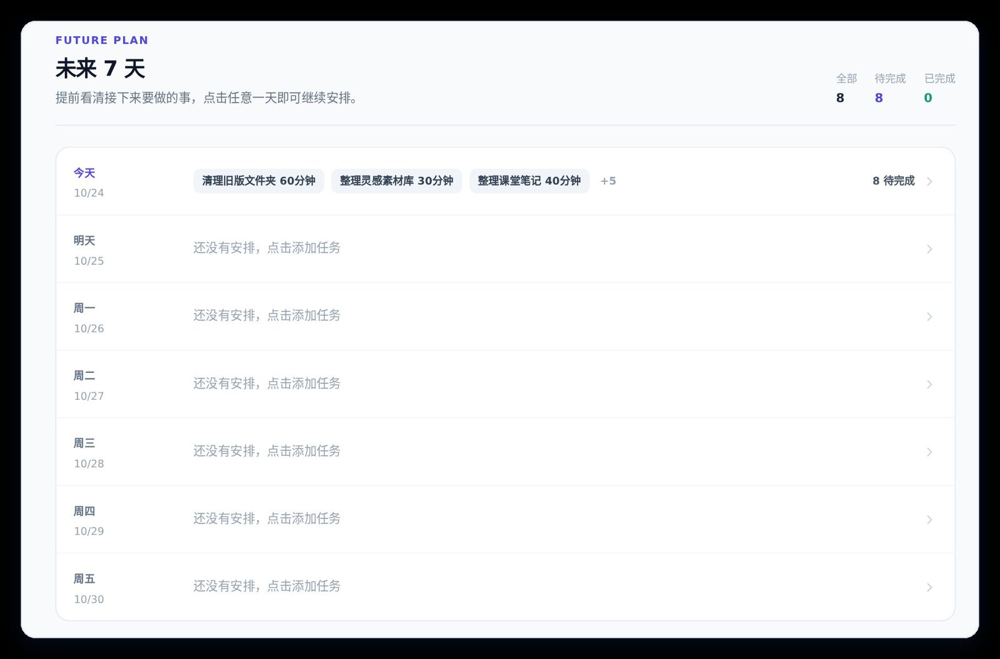
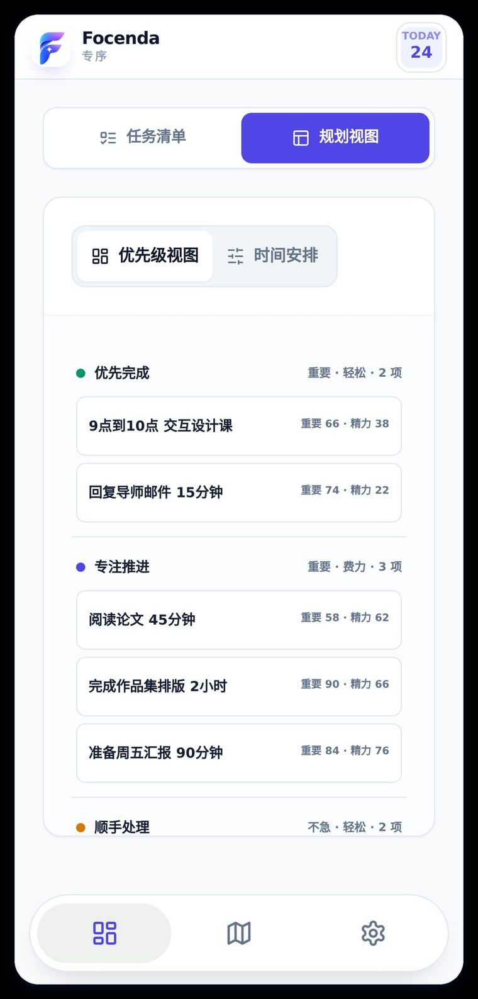

Focenda 专序 · 03 / 03
Focenda 专序 · 03 / 03
Flow Better.
Focus Smarter.
Focenda 专序：把零散任务，变成可执行的一日安排。起初是课程作业，课程结束后我继续独立打磨。


Problem · 问题
设计师的时间被“非设计”吃掉：琐事太多、信息没对齐、难拿出结果。
Approach · 判断
先把“排好今天”做扎实：按重要度 × 精力分象限，再按节奏生成时间轴。
Outcome · 结果
10 人内测中 9 人用了任务规划；产品从“设计师协作空间”收敛到每日规划。
01 · Problem
研究
设计师的时间，
被“非设计”吃掉了。
访谈初创公司设计师后，归纳出三类关键阻塞。
01
琐事太多
隐性劳动侵蚀创作时间。
02
信息没对齐
链路断裂导致高频返工。
03
难拿出结果
设计价值难以量化呈现。
- 研究起点：为设计师做 AI 协同工作空间
- 内测发现：最被需要的是“排好今天”
- 定位：每日规划与动态排期
02 · Design
核心流程
按价值与精力，
分进四个象限。
一句话输入任务，带上时长与时间；每个任务得到重要度与精力两项评分，气泡位置就是优先级。
- 优先完成重要 · 轻松
- 专注推进重要 · 费力
- 顺手处理不急 · 轻松
- 考虑删减不急 · 费力

Local rules · 每条安排都说得出理由
- 评估每项起始 40 分，按任务描述中的关键词加减，结果限定在 10–95。
- 归类以 50 分为界，分进四个象限。
- 排期专注 · 均衡 · 轻松三种节奏排序，全部在本地运行。

03 · Design
多端
电脑看全局，手机看下一步。


04 · Outcome
内测与迭代
内测 10 人 · 2 天。
9/10使用了任务规划
84%任务完成率
80%接受自动排期
6/10主动调整优先级
样本较小，属初步验证。参与者：学生 5 · 职场办公 3 · 自由职业 2。
从 Focus Flow 到 Focenda：
把术语换成人话。

| 维度 | 早期 · Focus Flow | 现在 · Focenda |
|---|---|---|
| 象限命名 | 极度聚焦 · 核心攻坚 · 摸鱼日常 · 强效排雷 | 优先完成 · 专注推进 · 顺手处理 · 考虑删减 |
| 评分维度 | 含金量 · 耗费 | 重要度 · 精力 |
| 导航结构 | 任务大厅 · 设计图库 · 周报 | 今日 · 未来 · 设置 |